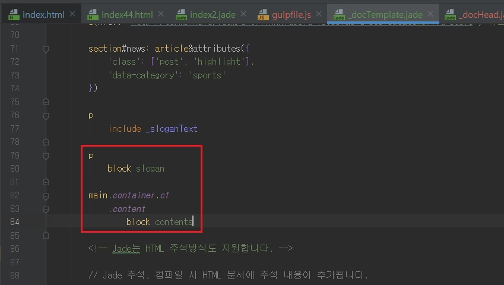

확장 & 상속(extends & inheritance) 사용하기
- 확장 & 상속(extends & inheritance) 사용하기
-
[parts] 디렉터리에 _docTemplate.jade 파일을 생성한 후 index2.jade 파일의 내용을 모두 잘라냅니다.
_docTemplate.jade 파일에 붙여 넣은 후 include parts/~~ 부분을 include ~~ 로 수정합니다.
index2.jade 파일에 아래를 참고하여 extends 키워드 뒤에 parts/_docTemplate.jade 파일 내용을 템플릿으로 사용하도록 설정합니다.
extends 키워드는 템플릿 문서를 확장할 때 사용합니다.
템플릿을 뼈대(Frame) 삼아 새로운 문서를 생성하는 것이 Jade에서는 확장(Extends)인 셈입니다.
즉, index2.jade 파일은 _docTemplate.jade 템플릿 문서를 확장하여 새로운 HTML 문서를 생성합니다.
extends 키워드를 사용하여 템플릿을 확장하는 방법을 알아보았습니다.
하지만 아직은 동일한 파일만 샏성할 수 있습니다.
템플릿 문서에서 내용이 서로 다른 웹페이지를 확장(extends), 생성하려면, block 키워드로 문서 내용을 대체할 수 있도록 만들어야 합니다.
먼저 템플릿 문서를 확장하는 다른 Jade 문서에서 내용을 대체하여 변경할 수 있도록 대체 변경 설정이 필요한 요소를 _docTemplate.jade 템플릿 문서에서 찾아 아래처럼 block 설정을 합니다.
변수 이름은 읽기 쉽게 작성하는 것이 중요합니다.

- 내비게이션 아이템 추가하기
-
현재 실습 단계에서는 index2.html에서 index3.html, test.html 페이지로 이동하려면 직접 웹브라우저 주속 표시줄에
http://localhost:90/index3.html 또는 http://localhost:90/test.html을 입력해야합니다.
index3.html, test.html 웹페이지로 이동하는 링크를 내비게이션에 추가하지 않았기 때문입니다.
내비게이션에 index3.html, test.html 웹페이지로 이동하는 링크를 추가하려면 parts/_navigation.jade 파일은 연 후 다음처럼
navi 믹스인을 호출하는 코드에 아이템을 추가하여 저장합니다.
이처럼 Jade를 사용하면 분리된 parts/_navigation.jade 파일만 수정해서 모든 웹페이지에 바로 결과를 반영할 수 있으므로 유지보수 관리에 매우 용이합니다.